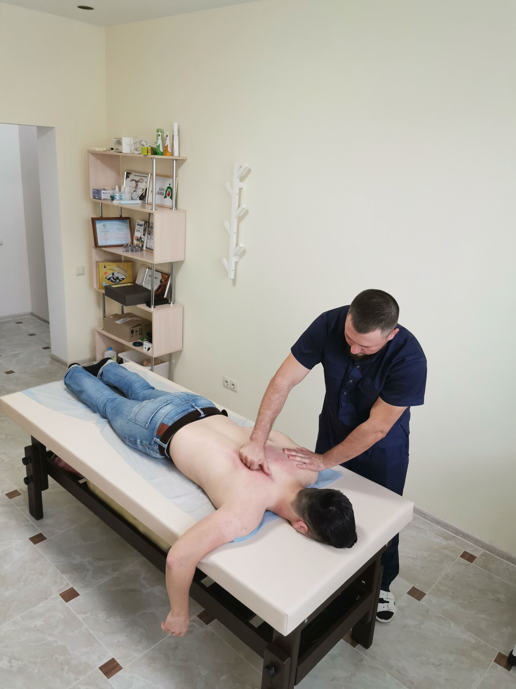
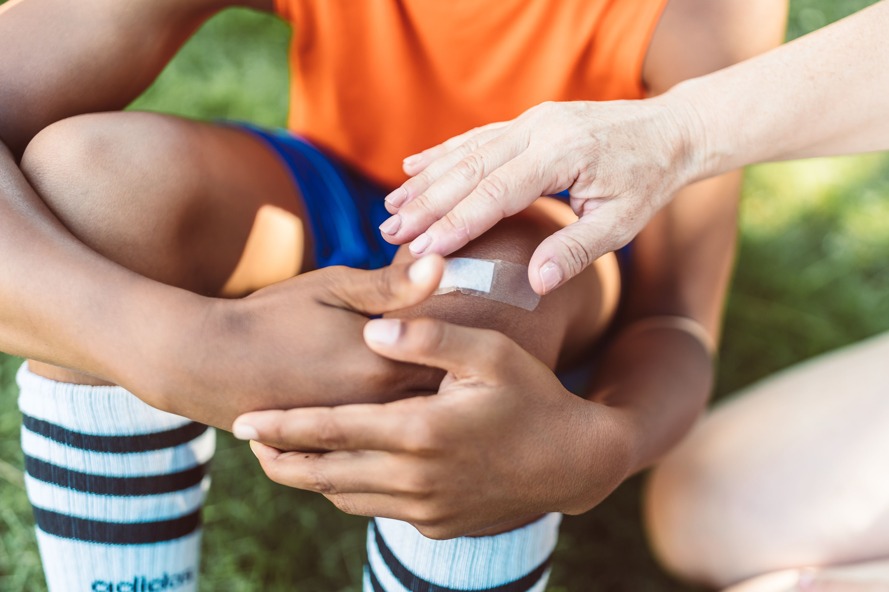
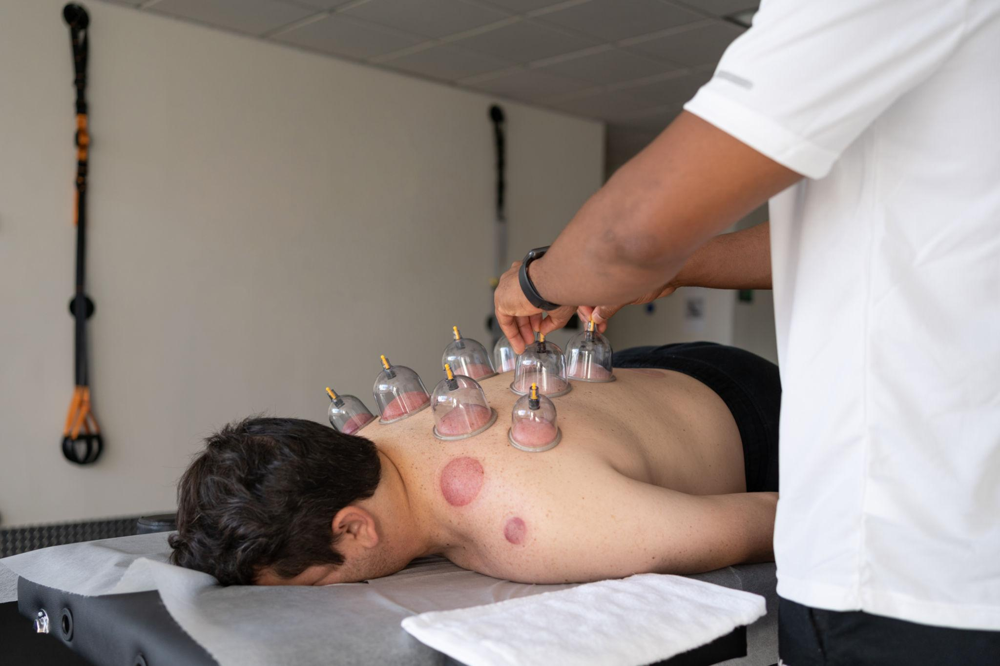
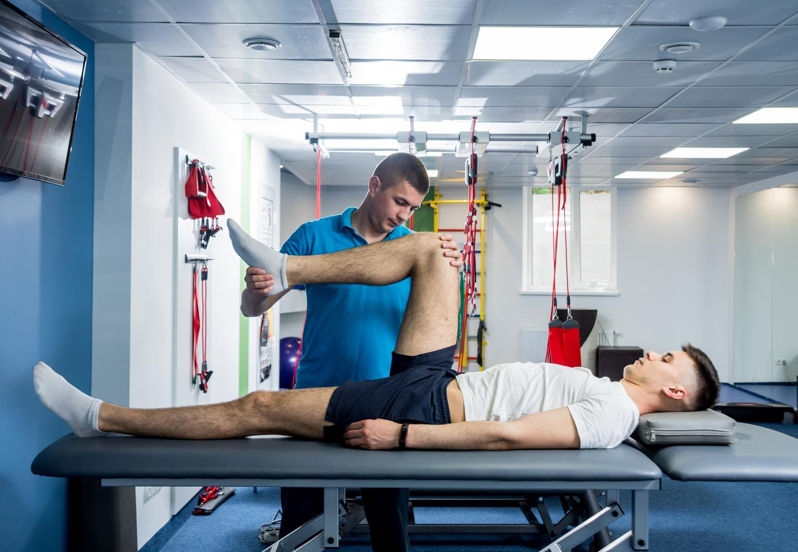
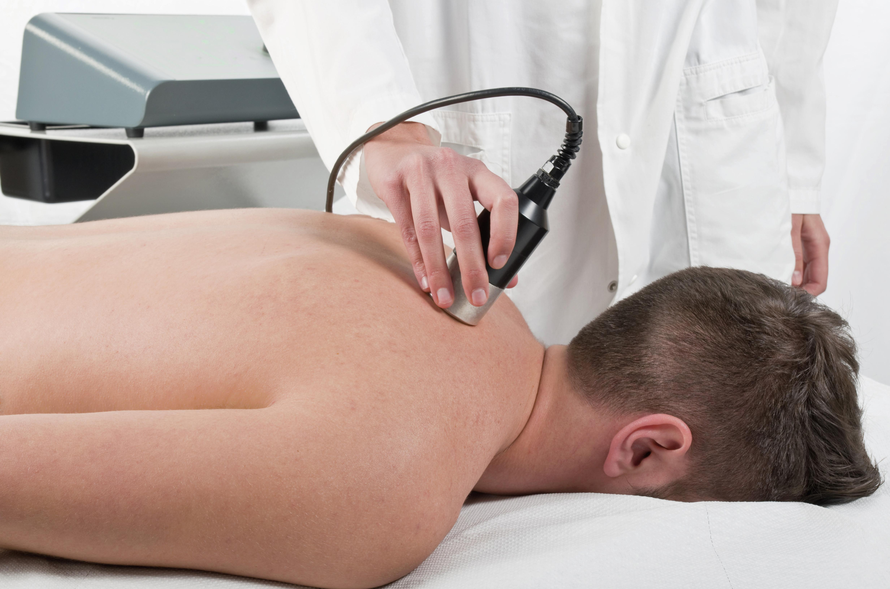
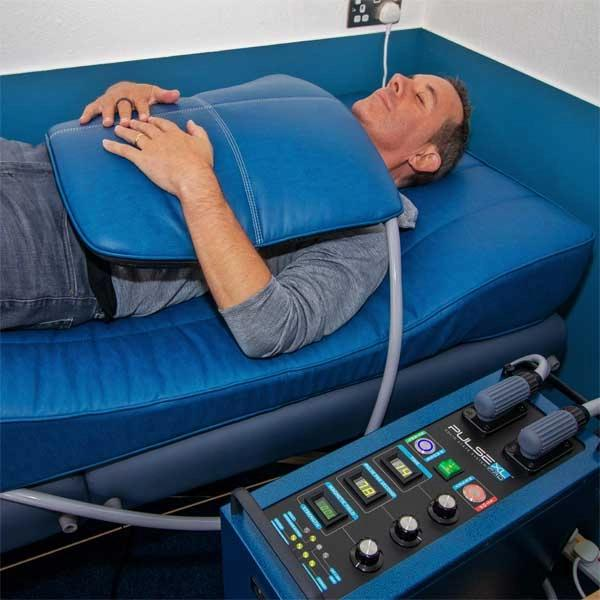

أخصائي متخصص في العلاج الطبيعي والتأهيل الحركي
اعرف حالتك الآن
الأخصائي أسيد ياسر
أخصائي العلاج الطبيعي والتأهيل والإصابات الرياضية
🏃
0
أكثر من 5000 جلسة علاج وتأهيل
⭐
0
نسبة رضا المرضى
💪
0
سنوات من الخبرة في العلاج الطبيعي
ابدأ التقييم
أجب عن مجموعة من الأسئلة البسيطة، وسيتم إعداد تقرير أولي يساعد الطبيب على فهم حالتك قبل التواصل معك.
خدمات العلاج الطبيعي
برامج علاج وتأهيل مصممة لمساعدتك على استعادة الحركة وتقليل الألم والعودة لحياتك الطبيعية.

علاج آلام الظهر والرقبة
برامج علاج طبيعي تساعد على تخفيف الألم وتحسين الحركة والعودة لممارسة أنشطتك اليومية بثقة.
- ✔ آلام أسفل الظهر
- ✔ آلام الرقبة والكتفين
- ✔ تحسين الحركة والمرونة

التأهيل بعد الإصابات
برامج تأهيل مخصصة بعد الإصابات والعمليات لمساعدتك على استعادة القوة والعودة لنشاطك بأمان.
- ✔ إصابات الملاعب
- ✔ تمزقات العضلات والأربطة
- ✔ تأهيل بعد العمليات والكسور
علاج آلام المفاصل
خطط علاج طبيعي تناسب مختلف حالات المفاصل، بهدف تقليل الألم وتحسين الحركة وجودة الحياة.
- ✔ آلام الركبة والكتف
- ✔ خشونة المفاصل
- ✔ تحسين التوازن والقوة

الحجامة العلاجية
جلسات حجامة علاجية تساعد على تحسين الدورة الدموية، وتخفيف آلام العضلات والمفاصل، وتقليل التشنجات بطريقة آمنة.
- ✔ تخفيف الشد العضلي
- ✔ تحسين الدورة الدموية
- ✔ تقليل آلام الظهر والرقبة

العلاج الطبيعي الرياضي
برامج علاج وتأهيل متخصصة للرياضيين تساعد على التعافي من الإصابات، والعودة للتدريبات والمنافسات بأفضل أداء.
- ✔ إصابات الملاعب
- ✔ الوقاية من تكرار الإصابة
- ✔ تحسين القوة والأداء الرياضي

العلاج اليدوي (Manual Therapy)
تقنيات علاج يدوية متقدمة لتحسين حركة المفاصل، وتقليل الألم، واستعادة مرونة العضلات دون تدخل جراحي.
- ✔ تحسين حركة المفاصل
- ✔ تخفيف الألم والتيبس
- ✔ زيادة المرونة والحركة

العلاج الطبيعي بالليزر
تقنية علاجية حديثة تستخدم الليزر منخفض الشدة للمساعدة في تقليل الألم والالتهابات وتسريع التئام الأنسجة وتحسين كفاءة العلاج الطبيعي.
- ✔ تخفيف الألم والالتهابات
- ✔ تسريع التئام العضلات والأوتار
- ✔ تحسين نتائج جلسات العلاج الطبيعي

العلاج الكهرومغناطيسي
يعتمد على المجالات الكهرومغناطيسية لتحفيز الأنسجة، وتقليل الألم، والمساعدة في تسريع عملية التعافي وتحسين كفاءة الحركة.
- ✔ تقليل الألم المزمن
- ✔ تحفيز التئام الأنسجة
- ✔ تحسين الدورة الدموية والحركة
خبرة الطبيب
كيف يقيّم الطبيب حالتك؟
خطوات التشخيص تبدأ بفهم سبب المشكلة ووضع خطة علاج تناسب كل حالة.
آلام الظهر والعمود الفقري
- تقييم الأعراض بدقة
- تحديد سبب المشكلة
- اختيار الخطة العلاجية المناسبة
إصابات الملاعب
- تقييم درجة الإصابة
- برنامج تأهيل مناسب
- متابعة تطور الحالة
آلام المفاصل
- معرفة سبب الألم
- تقييم حالة المفصل
- وضع خطة متابعة واضحة
لماذا الأخصائي أسيد ياسر؟
خبرة وعناية شخصية لمساعدتك على التعافي واستعادة حركتك بثقة.
يحرص د. أسيد ياسر على تقديم خطة علاج طبيعي تناسب حالة كل مريض، مع متابعة مستمرة والتركيز على علاج سبب المشكلة، وليس تخفيف الأعراض فقط، للوصول إلى أفضل النتائج والعودة إلى الحياة اليومية بأمان.
0
مريض تلقى برنامجًا علاجيًا0
سنوات من الخبرة0
نسبة رضا المرضى
قصص نجاح
حالات حقيقية... ونتائج يمكن مشاهدتها
نماذج مختصرة لحالات تم علاجها داخل المركز، مع إمكانية مشاهدة رحلة العلاج قبل وبعد.
رحلتك مع الأخصائي أسيد ياسر
رحلتك نحو التعافي
من أول خطوة داخل الموقع وحتى العودة إلى حياتك الطبيعية، ستسير في رحلة علاجية منظمة تساعد الأخصائي أسيد ياسر على فهم حالتك ووضع الخطة المناسبة لك.
01
اعرف حالتك
أجب عن أسئلة التقييم الذكي ليتم تجهيز ملخص أولي عن حالتك قبل التواصل مع د. أسيد.
02
التواصل مع الأخصائي أسيد ياسر
بعد مراجعة بياناتك يتم تحديد الموعد المناسب لك والبدء في متابعة حالتك.
03
التقييم السريري
يقوم الأخصائي أسيد ياسر بفحص حالتك وتقييم الحركة والألم لتحديد السبب ووضع الخطة العلاجية المناسبة.
04
بدء العلاج
تبدأ الجلسات باستخدام العلاج الطبيعي أو العلاج اليدوي أو الحجامة حسب ما تتطلبه حالتك.
05
التعافي والمتابعة
تتم متابعة تقدمك وتقديم الإرشادات والتمارين اللازمة لمساعدتك على الحفاظ على النتائج والعودة لنشاطك بثقة.
مواعيد العيادة
ساعات العمل
من 10:00 صباحًا إلى 10:00 مساءً
استقبال المرضى طوال اليوم
أيام العمل
يعمل طوال أيام الأسبوع
عدا يوم الجمعة
الفروع
السعودية - الرياض
التواصل
966537013638
احجز موعدك
الأسئلة الأكثر شيوعًا
كل ما تحتاج معرفته قبل وبعد الحجز
جمعنا أكثر الأسئلة التي يطرحها المرضى قبل حجز أول جلسة وبعد تأكيد الحجز حتى تكون الصورة واضحة من البداية.
قبل الحجز
كل ما تحتاج معرفته قبل اتخاذ قرار الحجز
يتم تحديد ذلك بعد تقييم حالتك والأعراض التي تعاني منها، حيث يوضح لك د. أسيد ما إذا كان العلاج الطبيعي هو الخيار المناسب لحالتك أو إذا كنت تحتاج إلى إجراء آخر قبل بدء العلاج.
يعتمد ذلك على نوع الحالة، ويتم توضيح الخطة العلاجية المناسبة بعد مراجعة حالتك والتأكد من أفضل أسلوب للتعامل معها.
في كثير من الحالات يساعد العلاج الطبيعي على تحسين الحالة وتقليل الألم واستعادة الحركة، لكن القرار النهائي يعتمد على التشخيص الطبي ونوع الإصابة.
يختلف ذلك من شخص لآخر حسب الحالة ومدى الالتزام بالخطة العلاجية، لكن غالبًا يبدأ كثير من المرضى بملاحظة تحسن تدريجي خلال الجلسات الأولى.
الهدف من العلاج الطبيعي هو تقليل الألم وليس زيادته، ويتم اختيار التقنيات المناسبة وفقًا لحالة كل مريض لضمان أقصى قدر من الراحة والأمان.
يمكنك التواصل لمعرفة مدى توفر الزيارات المنزلية حسب منطقتك وطبيعة الحالة.
يمكنك استخدام زر الحجز أو التواصل عبر واتساب، وسيتم الرد عليك لتحديد الموعد المناسب والإجابة عن أي استفسار.
بعد الحجز
استعد لأول جلسة بكل ثقة
يفضل إحضار أي أشعة أو تقارير أو فحوصات سابقة، بالإضافة إلى قائمة بالأدوية التي تستخدمها إن وجدت.
تختلف مدة الجلسة حسب الحالة، لكنها تتضمن التقييم ووضع الخطة العلاجية والبدء في العلاج إذا لزم الأمر.
يفضل ارتداء ملابس مريحة تسمح بحرية الحركة حتى يتم إجراء التقييم والجلسة بسهولة.
في كثير من الحالات يتم وصف بعض التمارين المنزلية لدعم نتائج الجلسات وتسريع التحسن.
يعتمد ذلك على طبيعة الإصابة، وسيتم توجيهك إلى الأنشطة المسموح بها والأنشطة التي يفضل تجنبها مؤقتًا.
يتم تحديد عدد الجلسات بعد التقييم، وقد يتم تعديل الخطة العلاجية حسب سرعة استجابة الحالة للعلاج.
إذا لاحظت أي أعراض غير معتادة أو زيادة في الألم أو كان لديك أي استفسار أثناء فترة العلاج، يمكنك التواصل مباشرة للحصول على التوجيه المناسب.
اختر الفرع
احجز موعدك
مواعيد العيادة
اضغط على الوقت لحجز موعدك مباشرة
الصباح
10:00 ص - 1:00 م
متاحبعد الظهر
1:00 م - 4:00 م
متاحالمساء
4:00 م - 7:00 م
متاحليلًا
7:00 م - 10:00 م
متاحالخدمات العلاجية
آلام الظهر والعمود الفقري
تأهيل المفاصل
إصابات الملاعب
التأهيل بعد الإصابات والعمليات
الحجامة العلاجية
العلاج اليدوي
جلسات العلاج الطبيعي
الاستشارات الأونلاين
وضع الخطة العلاجية
0%
جارٍ تجهيز التقييم...
يتم تحليل إجاباتك لإعداد ملخص مبدئي
0%
جارٍ تحليل حالتك...
نقوم بإعداد ملخص يساعد الأخصائي على فهم حالتك قبل بدء الجلسة.